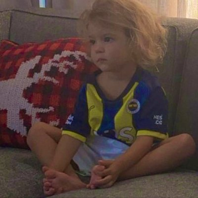

15 Maddeyle Bir Kadın Olarak Fenerbahçe Taraftarı Bir Sevgiliye Sahip Olmak
Anasayfa > Yaşam

Serhat Can
Onedio Üyesi123b
Okunma
edit_note
13.06.2022 - 19.07
Her ilişkide taraflar, birbirlerine başka dünyaların kapısını açar. İlgi alanlarınız, yetenekleriniz ve yaşam tarzınızla o ilişkiye bir şeyler katarsınız. Şimdi size tutkulu bir Fenerbahçe taraftarı ile birlikte olmanın ilişkinize getirdiği renkli ve coşkulu yanlardan bahsedeceğiz. Çünkü meğersem 'Futbol da bir hayatmış, Fenerbahçe de bir aşkmış.'
1. Derbi zamanlarında, futbolla hiç alakan olmasa bile dışarıda plan yapmazsın. Seni kırmak istemediği için plana uyduğu oluyor ama aklı maçta kalıyor.

2. Başka bir sevgi türüyle tanışırsın. Ne zaman onun lafı açılsa hala üzülüyorlar.

3. Onu ortak bir mutluluk ve coşkunun içinde gördüğünde, rahat bırakırsın. Çünkü bu, onun çocuk yanını görebileceğin nadir anlardan biridir.

4. Birlikte maça gitmeyi kabul ettiğinde, onu dünyanın en mutlu insanına çevirirsin.

5. "Aslında yakışıklı adammış" dediğinde, "ÖYLEDİR KOÇUM" demesine gülümsersin. Bunu bir dizi oyuncusuna yaptığında, aynı tepkiyi vermez.

6. Senin değişen saçını üç gün fark etmez. Fakat o futbolcular sahaya adım atar atmaz, onlardaki değişimi hemen görür. Kızar gibi olursun ama kızamazsın.

7. Sayesinde artık takımda olmayan ama zamanında çok sevilmiş oyuncuların da adını öğrenirsin. Demek gidenleri unutmuyor, o zaman beni de unutmaz, diye bakabilirsin.

8. "Futbolu sevmiyorum ve takım tutmuyorum." demene rağmen, bulduğu her fırsatta sana "O zaman noolur Feneri tut. Noolur noolur!" demesine alışırsın.

9. Kendini, iyi kötü futbol kurallarından anlarken bulursun. Hiç böyle hesaplamamıştın. :(

10. Şayet çocuk yaparsanız, çıkacak sonucu şimdiden tahmin edersin.

11. Saatlerce siyaset ve edebiyat konuştuğun adamın tutkulu bir taraftar olmasına inanamazsın. Hani futbol aptallaştırıyordu?

12. Lefter'inki gibi muazzam, bir sürü hayat hikayesi dinlersin. Futbolun yaşam hikayeli tarafını daha çok sevdiğinden, o da hep sana onları anlatır.

13. Kalbini titretecek inanılmaz taraftar hikayeleri öğrenirsin. Onun bunları seviyor olmasından hoşlanırsın.

14. Minicik bir detayı olan hediye ile onu mutlu edebilirsin. Ne alacağım, derdin hiçbir zaman olmaz.

15. Hatırı için forma giydiğinde, sana dünyanın en güzel kadınıymışsın gibi bakar. Bu kadar kolay güzelleşmeye şaşırırsın.

Bonus: Onun için takım değiştirmezsin, onun için takım da tutmazsın. Fakat onunla birlikte futbola ve kadın erkek tüm Fenerbahçe taraftarına, artık bambaşka bir yerden bakarsın.

😀
BU İÇERİĞE EMOJİYLE TEPKİ VER!
1968
👍1003
😍44
😂32
😓